三、原子发射光谱（174题）
一、选择题 ( 共66题 )
1. 2 分 (1003)
在(a),(b)两图中, 实线代表原子发射光谱法中有背景时的工作曲线, 虚线代表扣除了背景后的工作曲线,
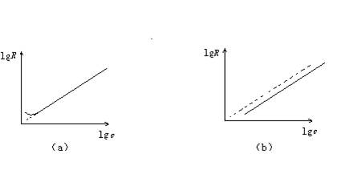
试说明:
(1) 各属于什么情况下产生的光谱背景(判断光谱干扰是来自分析线还是来自内标线)？
(2) 对测定结果有无影响?
2. 2 分 (1004)
在光栅摄谱仪中解决 200.0～400.0nm区间各级谱线重叠干扰的最好办法是 ( )
(1) 用滤光片 (2) 选用优质感光板
(3) 不用任何措施 (4) 调节狭缝宽度
3. 2 分 (1005)
发射光谱分析中，应用光谱载体的主要目的是 ( )
(1) 预富集分析试样 (2) 方便于试样的引入
(3) 稀释分析组分浓度 (4) 增加分析元素谱线强度
4. 2 分 (1007)
在谱片板上发现某元素的清晰的 10 级线，且隐约能发现一根 9 级线，但未
找到其它任何 8 级线，译谱的结果是 ( )
(1) 从灵敏线判断，不存在该元素
(2) 既有 10 级线，又有 9 级线，该元素必存在
(3) 未发现 8 级线，因而不可能有该元素
(4) 不能确定
5. 2 分 (1016)
闪耀光栅的特点之一是要使入射角a、衍射角b和闪耀角q之间满足下列条件 ( )
(1) a=b �� (2) a=q �� (3) b=q �� (4) a=b=q ��
6. 2 分 (1017)
下列哪个因素对棱镜摄谱仪与光栅摄谱仪的色散率均有影响？ ( )
(1) 材料本身的色散率 (2) 光轴与感光板之间的夹角
(3) 暗箱物镜的焦距 (4) 光线的入射角
7. 2 分 (1018)
某摄谱仪刚刚可以分辨 310.0305 nm 及 309.9970 nm 的两条谱线，则用该摄谱
仪可以分辨出的谱线组是 ( )
(1) Si 251.61 ─ Zn 251.58 nm (2) Ni 337.56 ─ Fe 337.57 nm
(3) Mn 325.40 ─ Fe 325.395 nm (4) Cr 301.82 ─ Ce 301.88 nm
8. 2 分 (1024)
带光谱是由下列哪一种情况产生的 ? ( )
(1) 炽热的固体 (2) 受激分子 (3) 受激原子 (4) 单原子离子
9. 2 分 (1025)
对同一台光栅光谱仪，其一级光谱的色散率比二级光谱的色散率 ( )
(1) 大一倍 (2) 相同 (3) 小一倍 (4) 小两倍
10. 2 分 (1026)
用发射光谱进行定量分析时，乳剂特性曲线的斜率较大，说明 ( )
(1) 惰延量大 (2) 展度大 (3) 反衬度大 (4) 反衬度小
11. 2 分 (1085)
光栅公式 [nl= b(Sina+ Sinb)]中的 b值与下列哪种因素有关？( )
(1) 闪耀角 (2) 衍射角 (3) 谱级 (4) 刻痕数 (mm-1)
12. 2 分 (1086)
原子发射光谱是由下列哪种跃迁产生的？ ( )
(1) 辐射能使气态原子外层电子激发
(2) 辐射能使气态原子内层电子激发
(3) 电热能使气态原子内层电子激发
(4) 电热能使气态原子外层电子激发
13. 2 分 (1087)
用摄谱法进行光谱定性全分析时应选用下列哪种条件？ ( )
(1) 大电流，试样烧完
(2) 大电流，试样不烧完
(3) 小电流，试样烧完
(4) 先小电流，后大电流至试样烧完
14. 1 分 (1089)
光电法原子发射光谱分析中谱线强度是通过下列哪种关系进行检测的（I――光
强，I――电流，V――电压）？ ( )
(1) I → i → V (2) i → V → I
(3) V → i → I (4) I → V → i
15. 2 分 (1090)
摄谱法原子光谱定量分析是根据下列哪种关系建立的(I――光强, N基――基态原子数,
DS――分析线对黑度差, c――浓度, I――分析线强度, S――黑度)？ ( )
(1) I －N基 (2) DS －lgc (3) I － lgc (4) S－ lgN基
16. 2 分 (1117)
当不考虑光源的影响时，下列元素中发射光谱谱线最为复杂的是 ( )
(1) K (2) Ca (3) Zn (4) Fe
17. 2 分 (1174)
用发射光谱法测定某材料中的 Cu 元素时，得铜的某谱线的黑度值(以毫米标尺表
示)为 S(Cu) = 612，而铁的某谱线的黑度值 S(Fe) = 609，此时谱线反衬度是 2.0，
由此可知该分析线对的强度比是 ( )
(1) 31.6 (2) 1.01 (3) 500 (4) 25.4
18. 2 分 (1199)
以光栅作单色器的色散元件，若工艺精度好，光栅上单位距离的刻痕线数越多，
则： ( )
(1) 光栅色散率变大，分辨率增高
(2) 光栅色散率变大，分辨率降低
(3) 光栅色散率变小，分辨率降低
(4) 光栅色散率变小，分辨率增高
19. 2 分 (1200)
发射光谱定量分析选用的“分析线对”应是这样的一对线 ( )
(1) 波长不一定接近，但激发电位要相近
(2) 波长要接近，激发电位可以不接近
(3) 波长和激发电位都应接近
(4) 波长和激发电位都不一定接近
20. 2 分 (1218)
以光栅作单色器的色散元件，光栅面上单位距离内的刻痕线越少，则 ( )
(1) 光谱色散率变大，分辨率增高
(2) 光谱色散率变大，分辨率降低
(3) 光谱色散率变小，分辨率增高
(4) 光谱色散率变小，分辨率亦降低
21. 2 分 (1220)
某光栅的适用波长范围为 600～200nm，因此中心波长为 460nm 的一级光谱线将
与何种光谱线发生重叠 ? ( )
(1) 230nm 二级线
(2) 460nm 二级线
(3) 115nm 四级线
(4) 除 460nm 一级线外该范围内所有谱线
22. 2 分 (1236)
光栅摄谱仪的色散率,在一定波长范围内 ( )
(1) 随波长增加,色散率下降
(2) 随波长增加,色散率增大
(3) 不随波长而变
(4) 随分辨率增大而增大
23. 2 分 (1237)
用发射光谱进行定性分析时,作为谱线波长的比较标尺的元素是 ( )
(1)钠 (2)碳 (3)铁 (4)硅
24. 2 分 (1238)
分析线和内标线符合均称线对的元素应该是 ( )
(1)波长接近 (2)挥发率相近
(3)激发温度相同 (4)激发电位和电离电位相近
25. 1 分 (1239)
下列哪个化合物不是显影液的组分？ ( )
(1)对苯二酚 (2)Na2S2O3 (3)KBr (4)Na2SO3
26. 1 分 (1240)
下列哪个化合物不是定影液的组分？ ( )
(1)对甲氨基苯酚硫酸盐 (2)Na2S2O3
(3)H3BO3 (4)Na2SO3
27. 2 分 (1241)
测量光谱线的黑度可以用 ( )
(1)比色计 (2)比长计 (3)测微光度计 (4)摄谱仪
28. 2 分 (1365)
火焰( 发射光谱 )分光光度计与原子荧光光度计的不同部件是 ( )
(1)光源 (2)原子化器 (3)单色器 (4)检测器
29. 2 分 (1368)
下列色散元件中, 色散均匀, 波长范围广且色散率大的是 ( )
(1)滤光片 (2)玻璃棱镜 (3)光栅 (4)石英棱镜
30. 2 分 (1377)
原子发射光谱与原子吸收光谱产生的共同点在于 ( )
(1)辐射能使气态原子内层电子产生跃迁
(2)基态原子对共振线的吸收
(3)气态原子外层电子产生跃迁
(4)激发态原子产生的辐射
31. 2 分 (1552)
下面哪些光源要求试样为溶液, 并经喷雾成气溶胶后引入光源激发？ ( )
(1) 火焰 (2) 辉光放电 (3) 激光微探针 (4) 交流电弧
32. 2 分 (1553)
发射光谱分析中, 具有低干扰、高精度、高灵敏度和宽线性范围的激发光源是( )
(1) 直流电弧 (2) 低压交流电弧
(3) 电火花 (4) 高频电感耦合等离子体
33. 2 分 (1554)
采用摄谱法光谱定量分析, 测得谱线加背景的黑度为S(a+b), 背景黑度为Sb,
正确的扣除背景方法应是 ( )
(1) S(a+b)－ Sb
(2) 以背景黑度Sb为零, 测量谱线黑度
(3) 谱线附近背景黑度相同, 则不必扣除背景
(4) 通过乳剂特性曲线, 查出与S(a+b)及 Sb相对应的I(a+b)及 Ib,然后用I(a+b)－ Ib扣除背景
34. 2 分 (1555)
用发射光谱法分析高纯稀土中微量稀土杂质, 应选用 ( )
(1) 中等色散率的石英棱镜光谱仪
(2) 中等色散率的玻璃棱镜光谱仪
(3) 大色散率的多玻璃棱镜光谱仪
(4) 大色散率的光栅光谱仪
35. 2 分 (1556)
电子能级差愈小, 跃迁时发射光子的 ( )
(1) 能量越大 (2) 波长越长 (3) 波数越大 (4) 频率越高
36. 1 分 (1557)
光量子的能量正比于辐射的 ( )
(1)频率 (2)波长 (3)传播速度 (4)周期
37. 1 分 (1558)
在下面四个电磁辐射区域中, 能量最大者是 ( )
(1)Ｘ射线区 (2)红外区 (3)无线电波区 (4)可见光区
38. 1 分 (1559)
在下面五个电磁辐射区域中, 波长最短的是 ( )
(1)Ｘ射线区 (2)红外区 (3)无线电波区 (4)可见光区
39. 1 分 (1560)
在下面四个电磁辐射区域中, 波数最小的是 ( )
(1)Ｘ射线区 (2)红外区 (3)无线电波区 (4)可见光区
40. 2 分 (1561)
波长为500nm的绿色光, 其能量 ( )
(1)比紫外线小 (2)比红外光小 (3)比微波小 (4)比无线电波小
41. 1 分 (1562)
常用的紫外区的波长范围是 ( )
(1)200～360nm (2)360～800nm (3)100～200nm (4)103nm
42. 2 分 (1563)
以直流电弧为光源, 光谱半定量分析含铅质量分数为10-5以下的Mg时, 内标线为
2833.07 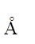
(1)MgⅠ2852.129, 激发电位为4.3eV
(2)MgⅡ2802.695, 激发电位为12.1eV
(3)MgⅠ3832.306, 激发电位为5.9eV
(4)MgⅡ2798.06, 激发电位为8.86eV
43. 1 分 (1564)
下面四个电磁辐射区中, 频率最小的是 ( )
(1)Ｘ射线区 (2)红外光区 (3)无线电波区 (4)可见光区
44. 2 分 (1565)
NaD双线[l(D1)＝5895.92, 由3P1/2跃迁至3S1/2; l(D2)＝5889.95, 由
3P3/2跃迁至3S1/2]的相对强度比I(D1)／I(D2)应为 ( )
(1) 1/2 (2) 1 (3) 3/2 (4) 2
45. 2 分 (1566)
下面哪种光源, 不但能激发产生原子光谱和离子光谱, 而且许多元素的离子线强
度大于原子线强度？ ( )
(1)直流电弧 (2)交流电弧
(3)电火花 (4)高频电感耦合等离子体
46. 2 分 (1567)
下面几种常用激发光源中, 分析灵敏度最高的是 ( )
(1)直流电弧 (2)交流电弧
(3)电火花 (4)高频电感耦合等离子体
47. 2 分 (1568)
下面几种常用的激发光源中, 最稳定的是 ( )
(1)直流电弧 (2)交流电弧
(3)电火花 (4)高频电感耦合等离子体
48. 2 分 (1569)
连续光谱是由下列哪种情况产生的？ ( )
(1)炽热固体 (2)受激分子 (3)受激离子 (4)受激原子
49. 2 分 (1570)
下面几种常用的激发光源中, 分析的线性范围最大的是 ( )
(1)直流电弧 (2)交流电弧
(3)电火花 (4)高频电感耦合等离子体
50. 2 分 (1571)
下面几种常用的激发光源中, 背景最小的是 ( )
(1)直流电弧 (2)交流电弧
(3)电火花 (4)高频电感耦合等离子体
51. 2 分 (1572)
下面几种常用的激发光源中, 激发温度最高的是 ( )
(1)直流电弧 (2)交流电弧
(3)电火花 (4)高频电感耦合等离子体
52. 2 分 (1727)
原子发射光谱仪中光源的作用是 ( )
(1) 提供足够能量使试样蒸发、原子化/离子化、激发
(2) 提供足够能量使试样灰化
(3) 将试样中的杂质除去,消除干扰
(4) 得到特定波长和强度的锐线光谱
53. 2 分 (1728)
用原子发射光谱法直接分析海水中重金属元素时, 应采用的光源是 ( )
(1) 低压交流电弧光源 (2) 直流电弧光源
(3) 高压火花光源 (4) ICP光源
54. 2 分 (1729)
矿物中微量Ag、Cu的发射光谱定性分析应采用的光源是 ( )
(1) ICP光源 (2) 直流电弧光源
(3) 低压交流电弧光源 (4) 高压火花光源
55. 2 分 (1730)
在原子发射光谱摄谱法定性分析时采用哈特曼光阑是为了 ( )
(1) 控制谱带高度
(2) 同时摄下三条铁光谱作波长参比
(3) 防止板移时谱线产生位移
(4) 控制谱线宽度
56. 1 分 (1731)
下列哪种仪器可用于合金的定性、 半定量全分析测定 ( )
(1)极谱仪
(2)折光仪
(3)原子发射光谱仪
(4)红外光谱仪
(5)电子显微镜
57. 2 分 (1732)
几种常用光源中，产生自吸现象最小的是 ( )
(1) 交流电弧 (2) 等离子体光源
(3) 直流电弧 (4) 火花光源
58. 2 分 (1735)
低压交流电弧光源适用发射光谱定量分析的主要原因是 ( )
(1) 激发温度高 (2) 蒸发温度高
(3) 稳定性好 (4) 激发的原子线多
59. 2 分 (1736)
发射光谱法定量分析用的测微光度计, 其检测器是 ( )
(1) 暗箱 (2) 感光板 (3) 硒光电池 (4) 光电倍增管
60. 2 分 (1737)
发射光谱摄谱仪的检测器是 ( )
(1) 暗箱 (2) 感光板 (3) 硒光电池 (4) 光电倍增管
61. 2 分 (1738)
发射光谱定量分析中产生较大背景而又未扣除分析线上的背景, 会使工作曲线的下部( )
(1) 向上弯曲 (2) 向下弯曲 (3) 变成折线 (4) 变成波浪线
62. 2 分 (1739)
当浓度较高时进行原子发射光谱分析, 其工作曲线(lgI ~lgc)形状为 ( )
(1) 直线下部向上弯曲 (2) 直线上部向下弯曲
(3) 直线下部向下弯曲 (4) 直线上部向上弯曲
63. 2 分 (1751)
对原子发射光谱法比对原子荧光光谱法影响更严重的因素是 ( )
(1) 粒子的浓度 (2) 杂散光 (3) 化学干扰 (4) 光谱线干扰
64. 2 分 (4514)
在进行发射光谱定性和半定量分析时, ( )
(1) 固定暗盒而移动哈特曼光栏 (2) 固定哈特曼光栏而移动暗盒
(3) 暗盒和光栏均要移动 (4) 暗盒和光栏均不移动
65. 2 分 (4515)
在进行发射光谱定性分析时, 要说明有某元素存在, 必须 ( )
(1) 它的所有谱线均要出现 (2) 只要找到2～3条谱线
(3) 只要找到2～3条灵敏线 (4) 只要找到1条灵敏线
66. 2 分 (4531)
在发射光谱定性分析中, 当1, 2级谱线出现时, 8～10级谱线 ( )
(1) 不一定出现； (2) 一定全部出现；
(3) 有的出现, 有的不出现； (4) 个别的不出现, 大部分出现。
二、填空题 ( 共46题 )
1. 2 分 (2014)
摄谱仪所具有的能正确分辨出相邻两条谱线的能力，称为 ______ 。把不同波
长的辐射能分散开的能力，称为 _________ 。
2. 2 分 (2017)
在进行光谱定性全分析时，狭缝宽度宜_____,目的是保证有一定的______，
而进行定量分析时，狭缝宽度宜 _____ ，目的是保证有一定的 _______ 。
3. 2 分 (2019)
使电子从基态跃迁到第一激发态所产生的吸收线，称为 ___________________ 。
4. 2 分 (2023)
原子发射光谱激发源的作用是提供足够的能量使试样 _________________ 和
________________ 。
5. 2 分 (2048)
有一闪耀光栅长 5cm，每毫米刻痕线数为 600 条，若入射角为 5°,则在该入射
角时，对 300.0nm 波长的辐射，最多可能看到 __________ 级亮条纹。
6. 2 分 (2053)
一光栅光谱仪，所用的光栅宽度 5cm，刻痕 1200条/mm，其第二级衍射光栅的分
辨率为 ____________ 。
7. 2 分 (2059)
影响谱线强度的内因是 __________________ ，外因是 __________________ 。
8. 2 分 (2070)
光谱定性分析时应选用灵敏度 _________ 和展度 _________ 的感光板。
9. 2 分 (2080)
在光谱定性分析时,只能使用原子线,不应使用离子线,这种说法是____________。
10. 2 分 (2082)
光谱分析中有自吸现象的谱线,在试样中元素的含量增多时,自吸程度将_____________.
11. 2 分 (2103)
感光板的二个重要的特性是______________和______________。
12. 2 分 (2104)
应用三标准试样法时,分析线对的黑度一定要在感光板的________________部分.
13. 2 分 (2430)
原子在高温下被激发而发射某一波长的辐射, 但周围温度较低的同种原子(包括低能级
原子或基态原子)会吸收这一波长的辐射, 这种现象称为__________________。
14. 2 分 (2431)
最常用的光谱缓冲剂有____________________ 及_________________________。
15. 2 分 (2432)
光谱定量分析中, 发现工作曲线的低含量部分向上弯曲, 可能是由于___________,
引起的, 必须进行______________加以校正。
16. 2 分 (2433)
光谱定量分析中产生较大背景而又未扣除会使工作曲线的_____________________
部分向______________弯曲。
17. 5 分 (2434)
在发射光谱中, 内标法、摄谱法和光电直读法定量分析的基本公式分别是________
___________, _________________________, ___________________________。
18. 5 分 (2435)
在谱线强度与浓度的关系式 I＝Acn中, n表示与___________有关的常数,
当n＝0时,表示 ; 当c值较大时,n值_________; 低浓度时,n值________,表
示_________
19. 5 分 (2436)
摄谱法定量分析中, 发现工作曲线向浓度轴方向弯曲, 可能由于_________________,
或____________________________。
20. 5 分 (2437)
发射光谱定性分析, 常以_________________光源激发, 因为该光源使电极温度
_______ 从而使试样__________, 光谱背景__________, 但其_____________差。
21. 5 分 (2438)
对下列试样进行发射光谱分析, 应选何种光源较适宜？
(1)海水中的重金属元素定量分析_______________
(2)矿物中微量Ag、Cu的直接定性分析______________
(3)金属锑中Sn、Bi的直接定性分析______________
22. 5 分 (2439)
发射光谱中, 背景的来源有____________________________________________、
__________________________________、___________________________________
及光谱仪产生的________________。
23. 2 分 (2440)
在直流电弧光源中, 自吸现象严重的主要原因是___________________________
和_______________________。
24. 2 分 (2441)
发射光谱定性分析中, 识别谱线的主要方法有(1)_____________________________,
(2)______________________。
25. 2 分 (2442)
随电弧光源温度增加, 同一元素的原子线强度________________________。
26. 2 分 (2443)
发射光谱分析用的标准试样必须具备_____________________, ________________,
____________________等条件。
27. 5 分 (2444)
光谱缓冲剂的作用有___________________________________________, _________
_______________________________, ____________________________________。
28. 2 分 (2445)
光谱定性分析要使用哈德曼光阑的目的是___________________________________
________________________________________。
29. 2 分 (2469)
衡量摄谱仪的性质, 可根据�覃覃覃覃覃覃覃覃覃覃覃覃覃覃覃�等三个光学特性
指标来表征.
30. 2 分 (2470)
应用光栅作为色散元件, 在光栅光谱中, 各级光谱之间有部分重叠干扰现象存在.
为了消除这种干扰现象, 方法有: �覃覃覃覃覃覃覃覃覃覃覃覃覃覃覃覃覃�.
31. 2 分 (2600)
用原子发射光谱进行定性分析时, 铁谱可用作_______________________ 。
32. 2 分 (2601)
光电倍增管的作用是(1)___________________________；(2)_____________________。
采用这类检测器的光谱仪称为________________________________ 。
33. 2 分 (2602)
原子发射光谱法定性分析的依据是__________________________________________。
对被检测的元素一般只需找出_________________灵敏线即可判断该元素是否存在 。
34. 5 分 (2603)
在原子发射光谱仪的激发光源中, 主要发生试样的______________________________
_______________________过程 。试样的蒸发速度主要取决于_________________,
达到稳定蒸发所需的时间称为_______________________________ 。
35. 5 分 (2604)
电感耦合等离子体光源主要由___________________、____________________、
__________________等三部分组成, 此光源具____________________________
_________________________________________________________等优点 。
36. 2 分 (2605)
原子发射光谱仪中, 低压交流电弧、高压火花等激发光源中的激发过程主要
是_________激发, 它是由____________________________引起的 。
37. 2 分 (2606)
某平面反射光栅的适用波长范围为600~200nm, 因此, 中心波长为460nm的
一级光谱将与波长为_________的光谱相重叠 。
38. 2 分 (2607)
在原子发射光谱分析的元素波长表中, LiⅠ670.785nm表示 _____________________
BeⅡ313.034nm表示_____________________________ 。
39. 2 分 (2608)
与低压交流电弧为光源的原子发射光谱法相比, 火焰原子发射光谱法的光源温度较
_______, 因此它的激发能量较__________, 但由于火焰燃烧较 , 所以后者测定的稳定性较好, 准确度较高。
40. 2 分 (2609)
在原子发射光谱定量分析中, 持久工作曲线法与三标准试样法相比较, 前者的优点是
__________________, 缺点是 。
41. 2 分 (4024)
元素光谱图中铁谱线的作用是 。
42. 2 分 (4042)
等离子体中元素的电离度与__________________________有关。
43. 2 分 (4513)
你的实验中所用的发射光谱的摄谱仪的色散元件是____________________, 检测
器是_________________________.
44. 2 分 (4516)
在发射光谱分析中, 将照过像的底板显影, 此过程的实质是_________________;
定影的作用是____________________________________________________________
_________________________________
45. 2 分 (4532)
在发射光谱定性分析中, 在拍摄铁光谱和试样光谱时, 用移动________来代替移
动感光板, 其目的是_____________________________________________________.
46. 2 分 (4533)
第一共振线是发射光谱的最灵敏线, 它是由____________跃迁至______________
时产生的辐射.
三、计算题 ( 共25题 )
1. 10 分 (3085)
WPG―100 型1m平面光栅摄谱仪上使用的衍射光栅为每毫米 1200 条，总宽度
为 50mm，闪烁波长为 300.0nm，试计算此光谱仪的倒线色散率，理论分辨率和闪耀角
（仅讨论一级光谱且衍射角很小）。
2. 5 分 (3086)
今有一块每毫米 600 条的光栅，复合光的入射角为 10°，试求复合光中波长为
400 nm 的单色光的衍射角（只考虑一级光谱）。
3. 10 分 (3088)
用加入法测量 SiO2中微量 Fe 时，以 Fe 302.6 nm 为分析线，Si 302.00nm
为内参比线，所测得的数据如下：
w(Fe)/%（加入量） 0 0.001 0.002 0.003
DS(Fe) 0.23 0.42 0.51 0.63
已知分析线和内参比线黑度均在乳剂特性曲线的直线部分，且r= 1.00，试求该试样中
Fe的质量分数。
4. 5 分 (3091)
若光栅刻痕为每毫米 1200 条，当入射光为垂直时（入射角＝0°）则 300.0 nm
波长的光在一级光谱中的衍射角应为多少？
5. 5 分 (3092)
已知光谱摄谱仪的光栅每毫米 1200 条，宽度为 5cm，求：
(1) 在一级光谱中，光栅理论分辨率是多少？
(2) 对于 l = 600nm 的红光，在一级光谱中,光栅所能分辨的最靠近的两谱线
的波长差是多少？
6. 5 分 (3099)
一块宽为 50mm，刻痕密度为 2400mm-1 的光栅，在二级光谱中的分辨能力为多少？
在 240.00nm 附近能分辨的两波长差为多少？
7. 5 分 (3101)
两根相差 0.28nm 的谱线, 在一光谱仪的出射狭缝焦面上分开的距离为 0.16mm，问
该仪器单色器的倒线色散率为多少？如果出射狭缝宽为 0.15mm，问单色器通带宽度为多
少？
8. 5 分 (3119)
用钛元素的两条谱线 TiⅡ322.4 nm 和 TiⅡ 322.3 nm 的强度比来计算光源的T，相应的光谱数据和测量结果如下：
l/nm E/eV g I
TiⅡ322.4 5.43 20.1 30
TiⅡ322.3 3.86 3.1 90
9. 10 分 (3141)
如果要分开钠 D 线 589.0 nm 和 589.6 nm, 则所需的棱镜分辨率为多少? 有一 3cm底边的棱镜, 在可见光区(450nm)的色散率 dn/dl 为 2.7×10-4nm-1,试计算在此波长下的分辨率。
10. 10 分 (3142)
计算 2500 K 时, 处于 3p激发态的钠原子数对基态原子数之比 (已知:从3p→3S 跃迁的钠原子线的平均波长为 589.2nm)。
11. 5 分 (3146)
有一每毫米 1200 条刻线的光栅,其宽度为 5cm, 在一级光谱中, 该光栅的分辨率为多少? 要将一级光谱中742.2 nm 和742.4 nm两条光谱线分开, 则需多少刻线的光栅 ?
12. 5 分 (3147)
今有刻线为每毫米1200 条的光栅, 当其闪耀角为 20°时, 其一级闪耀波长和二级闪耀波长各为多少 ?
13. 5 分 (3148)
用一每毫米有 500 条刻痕线的衍射光栅观察钠光谱线 (l=589.6nm), 问光线以30°角入射时, 最多能看到第几级条纹 ?
14. 10 分 (3312)
已知玻耳兹曼常数k为1.38×10-23J・K-1, 普朗克常数h为6.63×10-34J・S，光速c为
3×1010cm・S-1, 与钠原子的3S和3p能级对应的谱线波长为589.0nm,其3S和3p的统计权重之比为1/3。计算在火焰温度为3000K时, 3p激发态与3S基态的钠原子数的比值。
15. 10 分 (3317)
钠原子的3S基态和3p激发态对应的谱线波长为589.0nm, 3S和3p能级的统计权重分别为2和6, 该两能级所对应的能量差为3.37×10-19J.已知波耳兹曼常数为1.38×10-23J・K-1。
(1)试求典型的火焰温度(2500K)时激发态和基态的原子数之比,
(2)由计算结果比较温度对原子发射光谱法和原子吸收光谱法的影响。
16. 10 分 (3360)
求算CaI422.7nm的激发电位应为多少电子伏特? 当gi／g0＝3时, 计算在6000K时,激
发态原子与基态原子数目之比? (已知普朗克常数h＝6.626×10-34J・S, 玻耳兹曼常数k＝1.38×10-23J／K，1eV＝1.602×10-19J／mol)
17. 10 分 (3361)
计算在3000K时Na原子产生3p―3S间跃迁, 其波长为588.9nm, 此时激发态原子
数与基态原子数之比为多少? 若要使此比值增加50％, 则温度要增加到多少?
(已知普朗克常数h＝6.626×10-34J・S, 玻耳兹曼常数k＝1.38×10-23J／K)
18. 10 分 (3362)
计算温度为6000K时Na的D双线(lD1＝5895.92 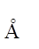
,由2P3/2→2S1/2所对应的激发态与基态原子数之比及其强度比。
(已知普朗克常数h＝6.626×10-34J・S, 玻耳兹曼常数k＝1.38×10-23J／K)
19. 5 分 (3363)
从谱线强度与有关因素的关系式: I＝Ahn(gi／g0)N0exp(－Ei／kT), 推导出用两线法测量等离子体温度的关系式。(Ei以eV为单位)
20. 5 分 (3364)
已知ZnI3072.06和ZnI3065.90的激发电位分别为8.11eV和4.03eV, 两者跃迁概率A及统计权重之比g(Ag)1／g (Ag)2＝380, 两谱线强度分别为64.75和165.96,试计算等离子体的温度.
21. 5 分 (3365)
计算Cu327.396nm及Na589.592nm的激发电位(eV)?
已知h＝6.62×10-34J・S, 1eV＝1.602×10-19J・mol-1
22. 10 分 (3366)
取粮食经硝化成溶液后, 用外推法测粮食中微量Pb, 将试样分为三等分,于A中加入等体积空白溶液, B中加入等体积含铅2mg/L的标准溶液, C中加入等体积含铅6mg/L的标准溶液.用铜火花法激发摄谱,分析线对为Pb283.3/CuⅠ282.4, 测得三份试液的黑度差分别为
DSA=0.4771, DSB=0.6232, DSC=0.8235,求硝化试样中的Pb含量. (已知r=1.24)
23. 5 分 (3367)
设在A板上测得均称线对的黑度差DSA＝0.87, 在B板上测得同一均称线对的黑度差
DSB＝0.79,B板上某元素分析线对的黑度差DSx，B＝0.48, 若将其转换成A板的黑度则DSx，A
应为多少?
24. 5 分 (3500)
每毫米刻有500条刻痕的衍射光栅，入射光的波长为590nm，问（1）光线垂直入射 时，（2）光线以45o角入射时，最多能观察几级光谱条纹？
25. 5 分 (3501)
某光栅摄谱仪的理论分辨率要达到50000，至少需要用多宽的光栅（1140条/mm）？ 这样的光栅哪级光谱能分开501.122nm和501.130nm两条谱线？
四、问答题 ( 共37题 )
1. 5 分 (3143)
根据选择定则估算 3D3,2,1 ─── 3P 2,1,0跃迁可能有的谱线。
2. 5 分 (4002)
简要总结发射光谱法和原子吸收光谱法的异同点及各自的特点。
3. 5 分 (4003)
光谱定量分析时为何要采用内标法？具有哪些条件的谱线对可作内标法的分析线对？
4. 5 分 (4009)
在发射光谱分析法中选择内标元素和内标线时应遵循哪些基本原则？
5. 5 分 (4018)
选择分析线对时两谱线的波长为什么要尽量靠近？
6. 5 分 (4019)
常从哪几个方面说明光谱仪的特征 ? 要分开 Fe 310.0666nm, 310.0304nm,309.9971nm三条铺线，则摄谱仪的最小分辨率是多少？
7. 10 分 (4021)
绘出下列函数的一般图像，并说明其用途：
(1) S = f(H) S 为谱线的黑度, H 为曝光量。
(2) I = f(c) I 为谱线的强度，c 为分析物浓度。
(3) DS = f(c) DS 为分析线对黑度差，c 为分析物浓度。
8. 5 分 (4023)
发射光谱分析中常用的光源有哪几种？各种光源的特性及应用范围是什么？
9. 5 分 (4026)
绘制乳剂特性曲线在光谱定量分析中有何作用？
10. 5 分 (4035)
电感耦合等离子体原子发射光谱法具有哪些优点？
11. 5 分 (4037)
用光谱项符号写出 Mg 的共振线。
12. 5 分 (4045)
谱线的自吸是什么原因引起的？
13. 5 分 (4131)
请简要写出高频电感耦合等离子炬 (ICP) 光源的优点。
14. 5 分 (4132)
发射光谱定量分析内标法的基本公式是什么？并说明式中各项的含义。怎样选择内标元素与内标线。
15. 5 分 (4134)
请解释: 发射光谱分析中的原子线、离子线
定性分析中的灵敏线、分析线
定量分析中的分析线对
16. 5 分 (4137)
发射光谱分析常用 (1) 直流电弧， (2) 低压交流电弧， (3) 高压火花作激发光
源；这三种光源的激发能力顺序应该怎样? 并简要说明理由。
17. 5 分 (4139)
发射光谱定性分析宜选用的感光板应具备什么条件?
18. 5 分 (4140)
发射光谱分析常用 (1) 直流电弧， (2) 低压交流电弧， (3) 高压火花作激发光源,这三种光源对试样的蒸发能力哪一个最大？为什么？
19. 5 分 (4147)
试述光谱定量分析的基本原理及何谓内标法。
20. 5 分 (4148)
试比较电感耦合等离子炬(ICP) 发射光谱法与经典的发射光谱法各自有哪些特点并简述其理由。
21. 5 分 (4364)
当采用直流电弧为发射光谱激发光源时, 谱线较清晰, 背景小, 而用电火花光源时, 背景大, 为什么?
22. 5 分 (4365)
用摄谱法进行光谱定量分析时, 要求将标准试样与分析试样在相同条件下, 摄于同一感光板上。今用标准曲线法制得标准工作曲线, 而试样摄于另一感光板上,可用什么方法在工作曲线上查得试样含量。
23. 10 分 (4367)
简述光谱仪的各组成部分及其作用?
24. 5 分 (4368)
解释发射光谱中元素的最后线、共振线及分析线与它们彼此间的关系。
25. 5 分 (4369)
在发射光谱法中谱线自吸对光谱定量分析有何影响?
26. 5 分 (4370)
若所需谱线范围在2000～3600 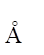
27. 5 分 (4371)
直流电弧中, 阳极斑点和阴极层是怎样形成的? 有何优越性?
28. 5 分 (4372)
分析下列试样, 应选什么光源最好?
(1)矿石的定性及半定量
(2)合金中的Cu(~x％)
(3)钢中的Mn(0.0x％~0.x％)
(4)污水中的Cr，Mn，Cu，Fe、Cd，Pb (10-4~0.x％)
29. 5分（4373）
分析下列试样, 应选何种类型的光谱仪?
(1)矿石的定性及半定量
(2)高纯Y2O3中的稀土杂质
(3)海水中的微量铷和铯
30. 5 分 (4374)
将某粉末试样装于碳电极空穴中, 用低压交流电弧激发摄谱, 经译谱, 发现以下波长(nm)谱线, 确定该试样含有什么成分?
Ca: 445.48 443.49 396.85 393.37 (灵敏线)
Mg: 518.36 517.27 383.82 383.23 285.21 (灵敏线)
Na: 589.59 588.99 330.30 330.32 (灵敏线)
Si: 288.16 252.85 251.61 250.69 (灵敏线)
Al: 266.04 (非灵敏线)
Ag: 328.06 (最灵敏线)
Cu: 327.39 324.75 (灵敏线)
31. 5 分 (4375)
用铁谱线组的下列数据制作乳剂特性曲线, 并标出该曲线的曝光不足、曝光正常、曝
光过度及其展度、斜率等。
Fe谱线波长/nm lgI S Fe谱线波长/nm lgI S
315.79 1.17 1.09 317.54 1.30 1.28
316.39 0.28 0.41 318.02 1.56 1.52
316.89 0.49 0.49 319.69 1.80 1.75
316.50 0.62 0.59 320.05 1.68 1.65
316.59 0.83 0.83 322.21 2.05 1.84
316.64 1.00 0.98 322.58 2.16 1.82
表中I――谱线相对强度 , S――谱线黑度
32. 5 分 (4376)
发射光谱半定量分析有哪些具体方法?
33. 5 分 (4383)
原子发射光谱实验时, 若将干板乳剂面在暗盒中装反, 那么经摄谱、显影、定影等处理后, 干板上会出现什么现象? 为什么?
34. 5 分 (4600)
现有下列分析项目, 你认为有哪些原子光谱法适合这些项目的测定, 简述理由。
(1) 土壤中微量元素的半定量分析；
(2) 土壤中有效硼(即沸水溶性硼)含量的测定, 硼含量大至在20mg・kg-1数量级；
(3) 小白鼠血液中有毒金属元素Cd含量的测定；
(4) 粮食中微量汞的测定。
(5) 人发中微量Pb的测定
35. 5 分 (4601)
何为内标?在原子发射光谱分析中如何使用?
36. 5 分 (4602)
对于火焰的不稳定性, 为何原子发射光谱要比原子吸收光谱及原子荧光光谱更敏感?
37. 10 分 (4603)
在(a),(b)两图中, 实线代表原子发射光谱法中有背景时的工作曲线, 虚线代表扣除了背景后的工作曲线,
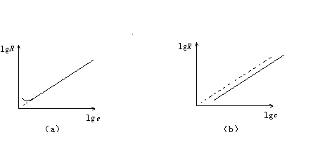
试说明:
(1) 各属于什么情况下产生的光谱背景(判断光谱干扰是来自分析线还是来自内标线)？
(2) 对测定结果有无影响?
三、原子发射光谱 答案
一、选择题 ( 共66题 )
1. 2 分 (1003) (2) 2. 2 分 (1004) (3) 3. 2 分 (1005) (4)
4. 2 分 (1007) (2) 5. 2 分 (1016) (4) 6. 2 分 (1017) (3)
7. 2 分 (1018) (4) 8. 2 分 (1024) (2) 9. 2 分 (1025) (3)
10. 2 分 (1026) (3) 11. 2 分 (1085) (4) 12. 2 分 (1086) (4)
13. 2 分 (1087) (4) 14. 1 分 (1089) (1) 15. 2 分 (1090) (2)
16. 2 分 (1117) (4) 17. 2 分 (1174) (1) 18. 2 分 (1199) (1)
19. 2 分 (1200) (3) 20. 2 分 (1218) (4) 21. 2 分 (1220) (1)
22. 2 分 (1236) (3) 23. 2 分 (1237) (3) 24. 2 分 (1238) (4)
25. 1 分 (1239) (2) 26. 1 分 (1240) (1) 27. 2 分 (1241) (3)
28. 2 分 (1365) (1) 29. 2 分 (1368) (3) 30. 2 分 (1377) (3)
31. 2 分 (1552) (1) 32. 2 分 (1553) (4) 33. 2 分 (1554) (4)
34. 2 分 (1555) (4) 35. 2 分 (1556) (2) 36. 1 分 (1557) (1)
37. 1 分 (1558) (1) 38. 1 分 (1559) (1) 39. 1 分 (1560) (3)
40. 2 分 (1561) (1) 41. 1 分 (1562) (1) 42. 2 分 (1563) (1)
43. 1 分 (1564) (3) 44. 2 分 (1565) (1) 45. 2 分 (1566) (4)
46. 2 分 (1567) (4) 47. 2 分 (1568) (4) 48. 2 分 (1569) (1)
49. 2 分 (1570) (4) 50. 2 分 (1571) (1) 51. 2 分 (1572) (3)
52. 2 分 (1727) (1) 53. 2 分 (1728) (4) 54. 2 分 (1729) (2)
55. 2 分 (1730) (3) 56. 1 分 (1731) (3) 57. 2 分 (1732) (3)
58. 2 分 (1735) (3) 59. 2 分 (1736) (3) 60. 2 分 (1737) (2)
61. 2 分 (1738) (1) 62. 2 分 (1739) (2) 63. 2 分 (1751) (4)
64. 2 分 (4514) (1) 65. 2 分 (4515) (3) 66. 2 分 (4531) (2)
二、填空题 ( 共46题 )
1. 2 分 (2014) 分辨率,色散率
2. 2 分 (2017) 窄,分辨率,宽，照度。
3. 2 分 (2019) 共振（吸收）线。
4. 2 分 (2023) 蒸发、激发。
5. 2 分 (2048) 一
6. 2 分 (2053) 120,000
7. 2 分 (2059)
各元素的激发电位统计权重；被测元素的浓度和弧焰温度。
8. 2 分 (2070) 高；小。
9. 2 分 (2080) 错误的
10. 2 分 (2082) 不会改善
11. 2 分 (2103) 反衬度，灵敏度
12. 2 分 (2104) 乳剂特性曲线的线性
13. 2 分 (2430) 自吸
14. 2 分 (2431)
碳(或石墨)粉
碱金属、碱土金属的卤化物或碳酸盐
15. 2 分 (2432)
分析线或分析线对有背景干扰 扣除背景
16. 2 分 (2433) 下部(或低含量部分) 上
17. 5 分 (2434)
(1) lgR＝lg(I分／I内)＝blgc＋lgA
(2)��S＝gblgc＋glgA
(3) lgV＝blgc＋lgA
18. 5 分 (2435)
自吸
I与c无关
<1
=1
无自吸
19. 5 分 (2436)
浓度高, 分析线有自吸现象
谱线黑度落入曝光过度区域
20. 5 分 (2437)
直流电弧 高 易于蒸发 较小 稳定性
21. 5 分 (2438)
(1)高频电感耦合等离子体 (2)直流电弧 (3)电火花
22. 5 分 (2439)
分子激发产生的带光谱
炽热固体及离子电子复合时产生的连续光谱
其它元素的原子或离子光谱对分析线的覆盖
杂散光
23. 2 分 (2440)
电弧中待测原子密度在一定范围内过大.
24. 2 分 (2441)
(1)铁谱比较法 (2)标准试样光谱比较法
25. 2 分 (2442) 增加
26. 2 分 (2443)
含量准确
与试样的基体组成、结构和形态相似
各组分要均匀
27. 5 分 (2444)
稳定电弧温度, 克服其它存在的元素对分析线强度的影响
稀释试样, 减少试样与标样在组成及性质上的差别
防止燃弧时试样从电极空穴中溅散损失
28. 2 分 (2445)
为了避免在摄取试样光谱与铁光谱时, 由于移动感光板位置所产生的机械误差而
导致译谱时错误判断
29. 2 分 (2469)
色散率、分辨率和集光本领
30. 2 分 (2470)
选择滤光片和分级器
31. 2 分 (2600)
谱线波长标尺来判断待测元素的分析线
32. 2 分 (2601)
将光信号转变为电信号
信号放大
光电直读光谱仪
33. 2 分 (2602)
各种元素的原子核外层电子基态与激发态之间的能级差（DE）大小不同，受激跃迁时，
不同的原子都有其特征的光谱线及线组； 2～3根。
34. 5 分 (2603)
蒸发及原子离子化；气态原子、离子激发
试样的热稳定性；
预燃时间。
35. 5 分 (2604)
高频发生器、等离子炬管、雾化器；
稳定性好、基体效应小、线性范围宽、检出限低、应用范围广、自吸效应小、准确度高。
36. 2 分 (2605)
高速、热运动的粒子； 碰撞。
37. 2 分 (2606)
230nm。
38. 2 分 (2607)
Li的670.785nm的原子线；
Be的313.042的一级离子线。
39. 2 分 (2608) 低； 低； 稳定。
40. 2 分 (2609) 分析速度快； 准确度较差。
41. 2 分 (4024)
元素光谱图中的铁光谱线为波长标尺，可为查找谱线时作对照用。
42. 2 分 (4042)
弧焰温度和元素的电离电位。
43. 2 分 (4513)
石英棱镜; 感光板(答案根据各学校仪器回答)
44. 2 分 (4516)
将曝过光的AgX还原成Ag; 使未感光的AgX与Na2S2O3作用生成可溶性盐而溶 于水.
45. 2 分 (4532)
光阑, 避免板移造成机械误差, 而使波长产生位差，译谱时发生困难。
46. 2 分 (4533)
第一激发态, 基态.
三、计算题 ( 共25题 )
1. 10 分 (3085)
1. 角色散率公式: db/dl = n/dcosb
cosb ≈ 1 , n= 1
倒线色散率公式：dl/dl = d/f
d = 1/1200 ( mm ) ; f ≈ 103 ( mm )
所以 dl/dl = 1/(1200×103) mm/mm = 106/(1200×103) nm/mm
= 0.8 nm/mm
2. 理论分辨率: R = nN = 1×1200×50 = 60×104
3. 闪耀角: sinq= lb/2d= 1/2×(300.0×1200×10-6) = 0.18
q= 10.37°
2. 5 分 (3086)
光栅基本公式 ±nl = b(sina±sinb)
令 a = 10°，sina= 0.17365
b = 1/600 ( mm ) = 106/600 ( nm ) = 1667 nm
先按 n = +1 , l = b(sina+ sinb) 计算：
400 = 1667 ( 0.17365 + sinb1) b1 = 3°48¢
这些单色光的衍射方向与入射光在光栅法线的同侧。
再按 n = -1 , l = (sina- sinb) 计算：
-400 = 1667 ( 0.17365 - sinb¢1’) b¢1= 24°26¢
这些单色光的衍射方向与入射光在光栅法线的两侧。
3. 10 分 (3088)
由于 DS = rlgR 且 r= 1.00
则 R 分别为 1.70 2.63 3.23 4.26
作 R―ω( % ) 工作曲线,如下图
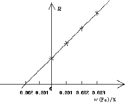
得 SiO2 中含ω(Fe)= 0.002%
4. 5 分 (3091)
光栅公式nl = b(sina+ sinb)
sinb = nl/b
b = 21.10°
5. 5 分 (3092)
(1) R = nN = 1×50×1200 = 6×104
(2) Dl= l/R = 600/(6×104) = 0.01 nm
6. 5 分 (3099)
R = nN = 2×50×2400 = 2.4×105
Dl= l/R = 240.00 / (2.4×105) = 0.001 nm
7. 5 分 (3101)
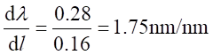
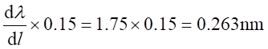
倒线色散率为 1.75 nm/mm。通带宽度为 0.263 nm。
8. 5 分 (3119)
由两谱线强度比公式得
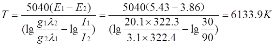
9. 10 分 (3141)
(1) 所需的棱镜分辨率为
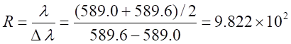
(2)在此波长下的分辨率为
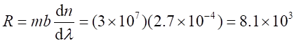
10. 10 分 (3142)
11Na 1s2,2s2,2p6,3s1
EJ = hc/l = (6.626×10-34×3×1010)/(5892×10-8) = 3.372×10-19J
3ｓ能级有 2 个量子状态 即 S= 1/2, L = 0, J = 1/2
所以 g0= 2J + 1 = 2
3p能级有 6 个量子状态, 即 S = ��,L = 1, J = ��,��
所以 gJ = ∑ gi’ = 4 + 2 = 6
代入 Boltzmann 方程式
NJ gJ 6
── = ─── exp[-EJ/(kT)] = ── exp[-3.372×10-12/(1.38×10-16×2500)]
N0 g0 2
NJ/N0 » 1.7×10-4
11. 5 分 (3146)
(1) 设光栅的分辨率为
R = nN = 1×(5×10×1200) = 60,000
(2) 需如下刻线的光栅
l (742.2+742.4)/2
R’= ─── = ───────── = 3711
Dl 742.4-742.2
N = R’/n = 3711/1 = 3711 条
12. 5 分 (3147)
(1) 根据 nl= 2bsinr
lr= 2bsinr/n
2(1/1200)sin20°
lr1= ────────── = 5.7×10-4mm = 570.0 nm
1
(2) 同理
2(1/1200)sin20°
lr2= ────────── = 285.0 nm
2
如学生问，可以提示 sin20°的值。
13. 5 分 (3148)
根据光栅公式 nl = b(sina + sinb)
当 a = 30°时 sina = 1/2
最多能看到衍射级次 n 的最大值对应于反射角 b = 90°即 sinb = 1
b 为光栅上二刻痕线间距离,故
b = 1/500 mm = 1/5000 cm
b(sina+sinb) 0.5 + 1
所以 n = ─────── = ────────── = 5.09 » 5
l 5000×5896×10-8
答：最多能看到第 5 级条纹。
14. 10 分 (3312)
E＝hc／l＝6.63×10-24×10-10×3×1010／（589.0×10-7）＝3.38×10-19J,而
Ni／N0＝（gi／g0）exp[－Ei／kT]＝（3／1）exp[－3.38×10-19／（1.38×10-20×10-3×3000）]＝8.54×10-4
15. 10 分 (3317)
(1)由玻耳兹曼公式 ,Ni／N0＝（gi／g0）exp（－Ei/kT）
＝（6／2）exp[－3.37×10-19／1.38×10-23×2500]＝1.72×10-4
(2)由此可知,在通常的火焰温度下,Ni/N0值很小,基态原子数N0可近似为原子总数. 即激发光源中激发态原子数Ni占原子总数的比例很小,且与温度呈指数关系,原子发射线的强度与Ni有关, 故原子发射法受温度影响较严重。而原子吸收线的强度与N0有关,温度的变化对数量大得多的N0影响很小, 故原子吸收法受温度的影响小。因此,原子吸收光谱法的准确度高于原子发射光谱法。
16. 10 分 (3360)
E＝hc／l＝6.626×10-34×3×1010／(422.7×10-7)＝4.698×10-19J＝2.93eV
Ni／N0＝(gi／g0)exp(－E／kT)＝3exp[－4.698×10-19／(1.3804× 10-23×6000)]
＝1.033×10-2
17. 10 分 (3361)
激发电位E＝hc／l＝6.626×10-34×3×1010／(588.9×10-7)＝3.372×10-19J
Ni／N0＝(gi／g0)exp(－E／kT)
＝（4／2）×exp(－3.372×10-19／(1.386×10-23×3000))＝5.86×10-4
使比值增加50％则Ni／N0＝8,715×10-4
exp(－E／kT)＝8.715×10-4／(4／2)＝4.358×10-4 则E／kT＝7.744
所以T＝3.372×10-19／(1.386×10-23×7.744)＝3156K
18. 10 分 (3362)
依玻耳兹曼方程 Ni／N0＝(gi／g0)exp(－Ei／kT)＝(gi／g0)exp(－hc／lkT)
(Ni／N0)D2＝（4／2）exp[－6.626×10-34×3×108／(5889.95×10-10×1.386
×10-23×6000)]＝0.034
(Ni／N0)d1＝（2／2）exp[－6.626×10-34×3×108／(5895.92×10-10×1.386
×10-23×6000)]＝0.017
谱线强度I∝(A gi/l g0)exp(－Ei／kT)
A为跃迁概率, 可认为两谱线的A相等
则I D 2:I D 1＝(0.034／5889.95):(0.017／5895.92)
I D 2／I D 1»2
19. 5 分 (3363)
条件是两谱线均为原子线或均为离子线
I1／I2＝g1A1l2／(g2A2l1)exp[－(E1－E2)／kT]
取对数经整理得
T＝5040(E1－E2)／{lg[(Ag)1／(Ag)2]－lg(l1／l2)－lg(I1／I2)}
20. 5 分 (3364)
T/K＝5040(8.11－4.03)／[lg380－lg(3072.06／3075.90)－lg(64.75 165.96)]
＝20563／(2.580＋0.408)＝6882
21. 5 分 (3365)
E＝hc／l 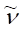
(Cu)＝1／(3273.96×10-8cm)＝3.054×104cm-1
(Na)＝1／(5895.92×10-8cm)＝1.696×104cm-1
所以E(Cu)＝3.054×104×1.986×10-16／(1.602×10-12)＝3.79eV
E(Na)＝1.696×104×1.986×10-16／(1.602×10-12)＝2.10eV
22. 10 分 (3366)
外推法定量分析的依据是 R＝I0／Is＝Aρn, 因含量极少, 可认为n＝1,
则 R＝Aρ而DS＝rlgR 或 R＝10DS／r,
得RA＝100.4771／1.24＝2.425
RB＝100.6232／1.24＝3.181
RC＝100.8235／1.24＝4.692
制作工作曲线(R-ρ曲线), 并查得试液中铅的含量为 6.3mg/L
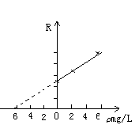
23. 5 分 (3367)
K＝DSA／DSB＝0.87／0.79＝1.10
则DSx，A＝DSx，B K＝0.48×1.10＝0.53
24. 5 分 (3500)
根据光栅公式 nl=b(sini+sinr)
（1）当i=90°时： 反射角r=0° 则nl=bsin90°
b=(1/500)mm=(1/5000)cm
n=sin90°/(5000×590×10-7)=1/(5000×590×10-7)=3.39≈3
最多能看到三级
（2）同上计算 i=45°时，sini=0.71 而反射最大r=90°
sinr=1 b=(1/5000)cm
n=(0.71+1)/(5000×590×10-7)=5.80≈6
最多能看到六级
25. 5 分 (3501)
对一级光谱而言R=nN，总刻线数N=50000 ，
则光栅的宽度I =50000/1140=43.86≈44mm
当分辨率为50000的光栅摄谱仪用于一级光谱不能分开501.122nm和501.130nm的谱线，因为 R=l/Dl
R=(501.122+501.130)/{2×(501.130-501.122)}=501.126/(8×10-3)=62640.8>50000
要分开此二波长的谱线，必须使R>62641，
所以对N＝50000的摄谱仪应采用二级光谱可使R=2×50000=100000>62641
四、问答题 ( 共36题 )
1. 5 分 (3143)
根据选择定则
��Dn = 0,1,2,3,… ��DS = 0
��DL = ±1, ��DJ = 0,±1
可知3D3,2,1 分别为： 3P3,2,1分别为：
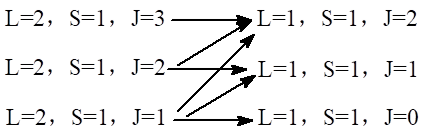
故有 3D3---3P2, 3D2---3P1, 3D1--3 P1, 3D1---3P1, 3D1---3P0, 3D1---3P2 等6条曲线。
2. 5 分 (4002)
相同点：都是原子光谱，涉及到价电子跃迁过程。
不同点∶ 1 能量传递的方式不同。
2 发射光谱法是通过测试元素发射的特征谱线及谱线强度来定性定量
的，而原子吸收光谱法是通过测试元素对特征单色辐射的吸收值来定量的。
特点：发射光谱法可进行定性和定量分析及多元素同时分析；原子吸收法只可进行定量分析，但准确度更高。
3. 5 分 (4003)
因为谱线强度 I 不仅与元素的浓度有关，还受到许多因素的影响，采用内标法
可消除操作条件变动等大部分因素带来的影响，提高准确度。
可作内标法分析线对的要求是：
1. 两谱线的激发电位相同或接近。
2. 波长尽可能接近，无自吸。
3. 两谱线的强度不应相差太大。
4. 两谱线应不受其它谱线干扰。
4. 5 分 (4009)
1. 在同一系列的标准试样和分析试样中应含有相同量的内标元素。内标元素（应不含分析元素）如果是外加的，则在分析试样中该元素原有的含量必须极微或不存在。
2. 分析元素和内标元素的挥发率必须相近，以避免分馏现象，否则发光蒸气云中原子浓度之比随激发过程而变。
3. 分析线与内标线的激发电位和电离电位应尽量相近，这样，谱线的强度比可不受激发条件改变的影响。
4. 分析线与内标线的波长应比较接近，强度也不应相差太大，这样可减少照相测量上引起的误差。
5. 分析线与内标线应没有自吸现象，并且不受其它元素的干扰。
5. 5 分 (4018)
感光板的反衬度 r 和惰延量 Hi 都与波长有关，在分析线对的波长相距很近时, 它们的反衬度和惰延量才相等，因而内标法定量公式 DS=rblgc + rlgA才成立。
6. 5 分 (4019)
摄谱仪常从线色散率、分辨率及集光本领三个方面说明其光学特性，要分析
Fe 310.0666nm，310.0304nm，309.9971nm 三条谱线, 摄谱仪的最小分辨率为
R = l/Dl = 3100/0.33 = 9400
7. 10 分 (4021)
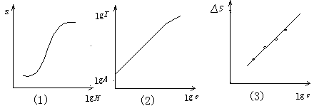
(1) 如图。S-lgH 为乳剂特性曲线。曲线分曝光不足、过度和正常三部分。光谱定量
分析一般应在正常曝光部分工作。S-lgH曲线对于选择感光板、曝光时间、显影条件
及试样浓度等有重要参考价值。
(2) 如图。由于 lgI = blgc + lgA 得 lgI - lgc 光谱定量分析工作曲线。在一定浓度范围
内分析校准曲线为一直线，b 为斜率，在高浓度下，曲线弯曲；A随工作条件变化。
为了消除这些影响，采用内标校准曲线法。
(3) 如图。DS-lgc 为内标工作曲线。它是最基本的光谱定量分析方法，标准试样不少于
三个，该方法的优点是准确度较高。
8. 5 分 (4023)
发射光谱分析中常用的光源有：直流电弧、交流电弧和电火花三种。
直流电弧：电极温度高，分析的绝对灵敏度高，背景小，电弧温度一般可达4000～7000K, 可激发 70 种以上的元素。但弧光游移不定，重现性差，适用于做定性分析及低含量杂质的定量分析。
交流电弧：电极温度低于直流电弧，电弧温度稍高于直流电弧，激发能力稍强于直流电弧，灵敏度则稍低，但稳定性比直流电弧高，操作简便安全，适用于光谱定性定量分析。
电火花：电极温度低，灵敏度低，火花温度高，可以激发难激发元素，放电稳定性好，适用于金属及合金的定量分析及难激发元素的分析。
9. 5 分 (4026)
(1) 了解感光板的性质；
(2) 选择合适的曝光时间；
(3) 选择适合的浓度范围；
(4) 由 S 值推算 lgI 。
10. 5 分 (4035)
具有四大优点： 1. 精密度高； 2. 检测限低； 3. 基体效应小； 4. 线性范围宽。
11. 5 分 (4037) 31S0- 31P0
12. 5 分 (4045)
当某一元素的谱线射出弧层时，由于弧层外部的同类冷原子对此辐射产生吸收，使得光强与原子的浓度不呈正比关系，这种现象称为自吸。
13. 5 分 (4131)
温度高可达 10000 K，灵敏度高可达10-9；
稳定性好，准确度高，重现性好；
线性范围宽可达 4~5 个数量级；
可对一个试样同时进行多元素的含量测定；
自吸效应小；
基体效应小。
14. 5 分 (4132)
lgR = lg(I分/I内)= b lgc + lgA
I分 - 分析线强度 b - 自吸常数 A - 常数 c- 待测元素浓度
I内 - 内标线强度
选择内标元素：被测元素与内标元素应有相近的理化性质，挥发率必须接近。内标元素可为基体或试样不含有的外加元素，且它含有的分析元素小到可以忽略。内标线的选择：与分析线激发电位、电离电位尽量接近。 二者的波长、黑度要接近，内标线没有自吸并不受其它元素影响。
15. 5 分 (4134)
原子线：原子被激发所发射的谱线。
离子线：离子被激发所发射的谱线。
灵敏线：一些激发电位低的谱线，它的发光强度大。
分析线：分析过程中所使用的谱线，也即确定某一元素是否存在的谱线。
分析线对：定量分析中的分析线对由分析线与内标线组成。从被测元素中选一根谱线作为分析线，从内标元素中选一条谱线作为内标线，以它们的相对强度比lgR作工作曲线，使光源强度对谱线强度影响得到补偿。
16. 5 分 (4137)
(3)>(2)>(1), 因为火花温度(即激发温度)很高。
17. 5 分 (4139)
选择灵敏度高而反衬度低的板, 以增加分析灵敏度。
18. 5 分 (4140)
直流电弧最大。直流电弧工作时,阴极射出的电子,在电场加速下不断轰击阳极,在阳极表面上形成一个温度极高的斑点,在碳电极上,这个斑点称为阳极斑, 由于阳极温度很高,一般都将试样置于阳极碳棒孔穴中,所以直流电弧蒸发能力最高。
19. 5 分 (4147)
光谱定量分析是根据待测元素谱线的强度和待测元素的含量之间存在一种关系, 即罗马金公式 I = acb来进行定量分析的，谱线强度可以用光电直读法，也可以用照相法记录。
在被测元素的谱线中选一条分析线，在基体元素谱线中选一条与它相匀称的内标线，根据这一对谱线强度的比值对被测元素的含量制作工作曲线，然后对未知试样进行定量分析的方法称为内标法。
20. 5 分 (4148)
(1) 灵敏度高, 10-9g数量级的成分不难测定。因为 ICP 的火焰温度可高达 10000 K，能激发一般光源难激发的元素，不易生成难熔金属氧化物，背景小，故灵敏度高。
(2) 精密度好，1% 的误差范围很易实现。因为试样用溶液法进样，气化均匀， 没有试样溅散问题。
(3) 线性范围宽，可达 4~5 个数量级。因 ICP 光源中试样微粒集中在高频涡 流的轴向通道内，试样浓度、微粒形状都不会影响原子化和激发效率，对低浓度试样, 背景低, 对高浓度试样又无自吸危害，故分析的浓度范围宽。
(4) 基体影响小。同一标准溶液可用于不同的试样。
(5) 因不用电极,光谱干扰及背景小。
21. 5 分 (4364)
直流电弧激发温度较低,只能激发一些低电离电位及中等电离电位的元素,故谱线少, 背景低。而电火花的激发温度较高, 还能激发出高电离电位的原子线及离子线,故出现的谱线较多, 特别是离子与电子复合时产生的连续光谱, 造成较深的背景。
22. 5 分 (4365)
选用同一均称线对时, 测得其在两块光谱板上的黑度差为DS1及DS2，求得转换系数K＝DS1／DS2,然后将试样分析线对的黑度差与K相乘得到转换后的黑度差, 便可直接在标准工作曲线上查出试样含量。
23. 10 分 (4367)
由照明系统、准光系统、分光系统及检测系统组成。
照明系统: 将光源发出的光聚焦, 并均匀照射在光谱仪的入射狭缝上
准光系统: 将入射光转变成平行光, 照射在分光装置上。
分光系统: 入射平行光经棱镜或光栅分光,再经暗箱物镜聚焦,并按波长顺序从出射狭 缝输出。
检测系统: (1)用肉眼观测的叫看谱镜。
(2)用光谱感光板摄取光谱, 将光强转变成黑度, 再用测微光度计测其黑
度的称为摄谱仪。
(3)用光电检测器将光强信号转变为电信号测量的,称为光电直读光谱仪。
24. 5 分 (4368)
最后线: 元素含量减少而最后消失的谱线。
共振线: 是基态原子与最低激发态(共振态)原子间跃迁产生的谱线, 谱线强度大, 常用作分析线。
分析线: 用于定性和定量分析的谱线。
25. 5 分 (4369)
在发射光谱法中定量分析公式 I＝Acn�� 无自吸时 n＝1, I＝Ac, 有自吸时n＜1, 往往不是常数。根据公式I＝Acn 绘制
26. 5 分 (4370)
应选用紫外吸收光谱仪, 应采用石英制作棱镜与透镜, 因为普通玻璃会吸收紫外线。
27. 5 分 (4371)
由阴极放出的电子, 不断轰击阳极表面, 使阳极表层形成高温亮斑, 即阳极斑点。阳极斑点有利于试样蒸发而提高分析灵敏度。
在电场作用下, 于阴极附近形成密集的空间阳离子层, 即阴极层, 它的激发温度高, 原子或离子浓度大, 滞留时间长, 使激发概率增大, 可用于降低元素的检测限。
28. 5 分 (4372)
(1)直流电弧
(2)电火花
(3)交流电弧
(4)高频电感耦合等离子体
29. 5分（4373）
30. 5 分 (4374)
含有Ca,Mg,Na,Si,Cu; 不存在Al, 可能有Ag
31. 5 分 (4375)
曝光不足: AB部分, 黑度在0.6以下
曝光正常: BC部分, 黑度在0.6~1.8
曝光过度: CD部分, 黑度在1.8以上
展度范围 lgI＝0.62~1.8
斜率 r＝tana＝0.97
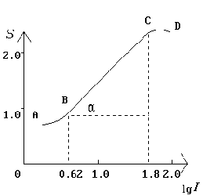
32. 5 分 (4376)
通常有四种方法:
(1)显现法
(2)比较光谱线法
(3)均称线对法
(4)阶数法
33. 5 分 (4383)
在干板长波(可见光区)部分会有谱线出现, 其它短波大部分均为空白.因为短波(紫外部分)光被干板基(玻璃)所吸收, 无光透过, 所以乳剂不被感光, 因此处理后为空白, 看不到谱线.长波(可见光区)会透过玻璃, 使乳剂感光,所以处理后, 可看到谱线。
34. 5 分 (4600)
（1）原子发射光谱半定量分析，因为一次摄谱即可进行全部元素测定。
（2）石墨炉原子吸收分光光度法，因为灵敏度高。
（3）原子吸收分光光度法或ICP原子光源发射光谱分析法，因为前者灵敏简便，选择性好，后者灵敏度高，线性范围宽。
（4）冷原子吸收法最合适，因为操作方便，干扰少。
（5）原子吸收分光光度法，ICP原子光源发射光谱法，原子荧光光度法。
35. 5 分 (4601)
内标是指置于各试样及标样中的一定浓度的某元素。使用方法如下：
取定量的内标物分别置于被测试样及标准物之中，在选定波长下分别测定发射强度计算 出内标在各试样中及标样中的相对强度以及待测物成分的相对强度，用待测物与内标物 两相对强度之比求出各试样的浓度。
36. 5 分 (4602)
原子发射光谱所检测的是激发态原子数，而原子吸收检测的是基态原子数，火焰不稳 定，其温度差DT将导致激发态原子数目的比例显著改变，而基态原子数目比例改变很 小，故原子发射光谱对火焰的不稳定性较敏感。
37. 10 分 (4603)
（1）(a) 为分析线有背景。
此时待测元素含量低，背景强度几乎等于分析线强度(Ib≈I1)，即
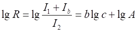
多一附加项，同样的c所得的lgR要大，故工作曲线向纵轴弯曲。(3分)
(b)为内标线有背景。即
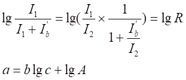
曲线平移一段距离( 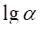
（2）(a)对测定结果有影响。（2）(b)对测定结果无影响。(3分)